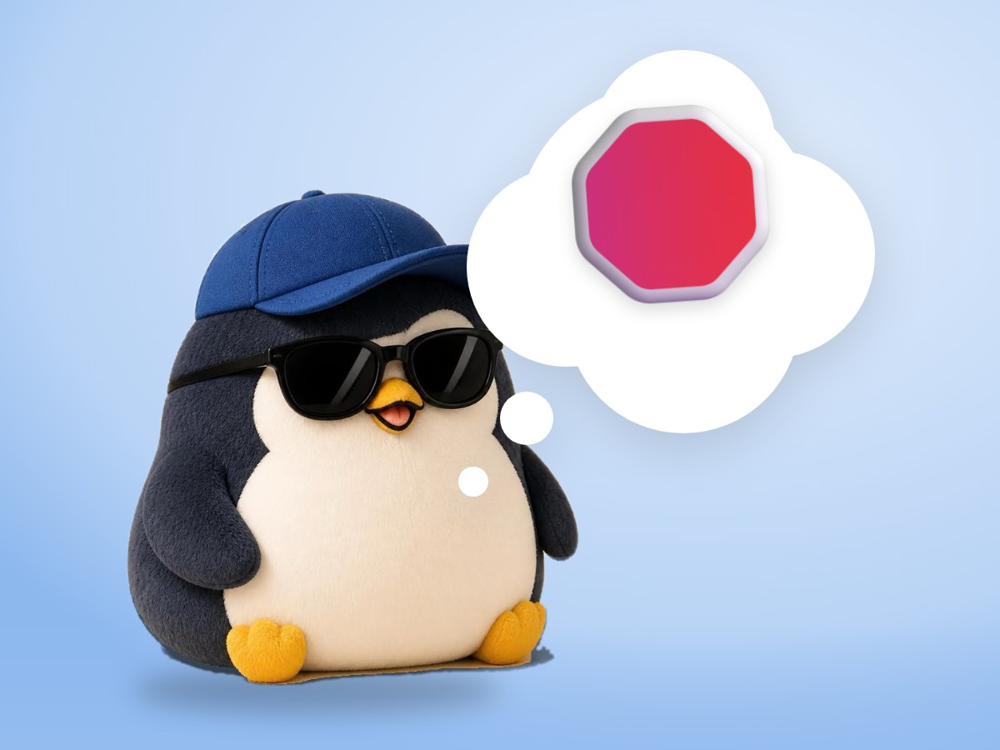

📝 DRAFT · 下書き — まだ本番に出していません · 下書き一覧
🐧 EVERYDAY LIFE⚡ 22 SEC
When anger goes around in your head, say "Stop!" and clap 👏

The Loop
Sometimes I remember a bad thing again and again, around and around in my head.
The Trick
At those times, I say "Stop!" in my heart and clap my hands once.
Loop Breaker
It is said the sound stops the loop of thoughts for a moment.
⚡ TRY IT
Clap the loops away
So rude!
Why me?!
Not fair!
Loops left: 3
Bad thoughts are going around and around. Clap to stop them, 1 by 1.
🍃 All the loops stopped. Your head is quiet now.
😳 Everyone jumped! Clap in your heart, or when you are alone.
On Trains
But if you do it on a train, the people around you will be surprised.
Alone Time
So please do it when you are alone.
📚 I learned this from the Japanese blog "Panda no Ondo".